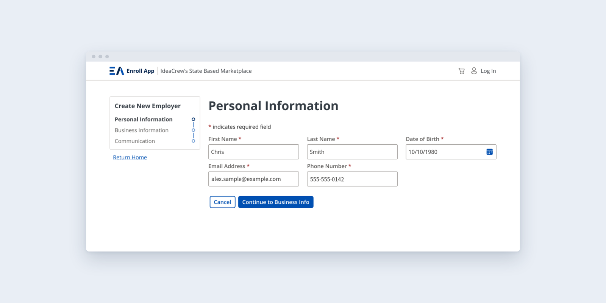
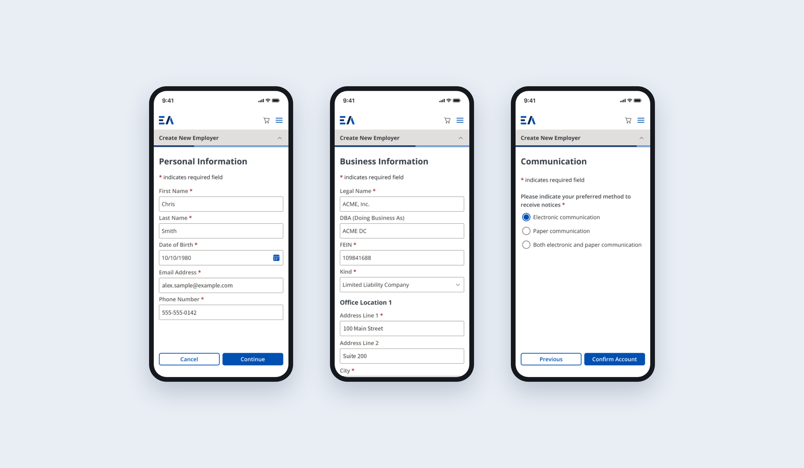
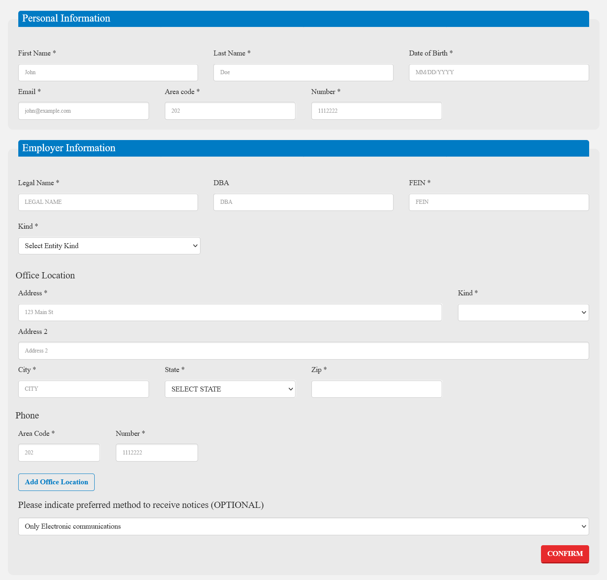
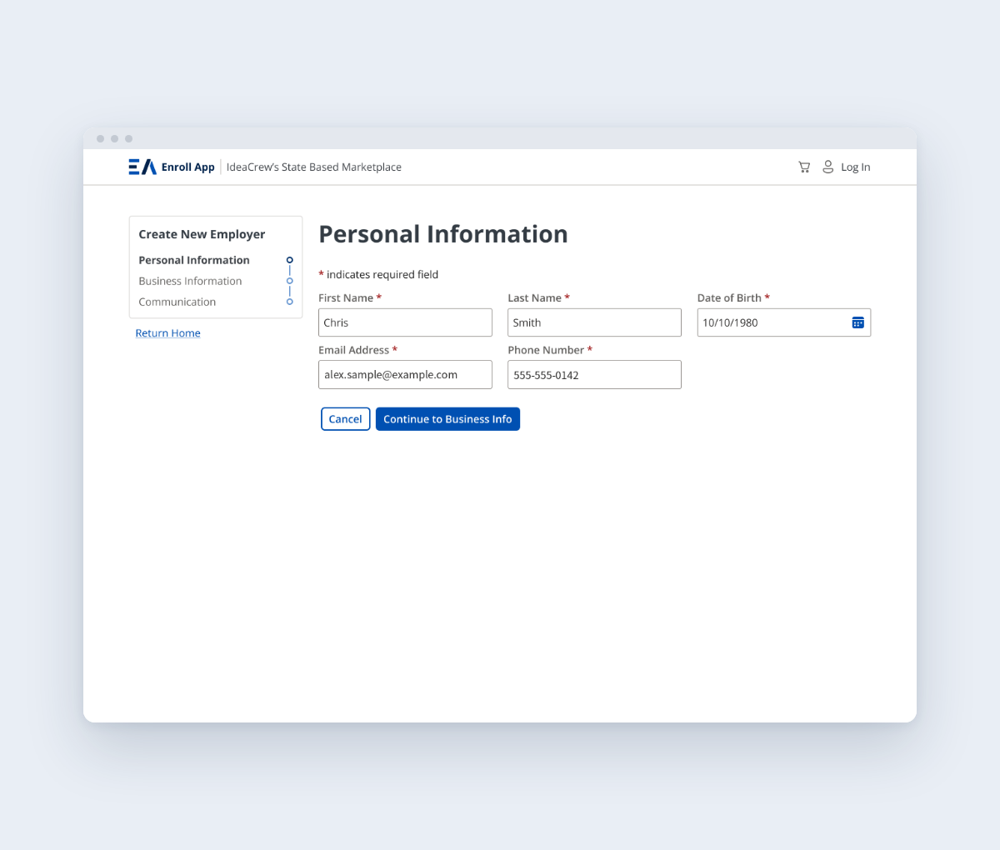

Enroll App
Enroll App runs the health insurance marketplaces for Washington DC, Maine and Massachusetts. I led the redesign of the enrollment experience: mobile-first, WCAG AA and Section 508 compliant, and built on a new Figma design system as the platform moved off Bootstrap 3. The redesign is live in Maine's Individual Market, with DC's migration planned for 2026–2027.
- Role
- Design Lead
- Company
- IdeaCrew
- Team
- [Names, with permission]
- Services
- Product designAccessibilityResearchDesign system
- Years
- [Start year]–present

New employer enrollment
Small businesses signing up for coverage used to face one long form: personal details, employer details, office locations and notice preferences all on a single page, ending in a red Confirm button. I split it into three short steps (Personal Information, Business Information and Communication) with a progress rail that shows where you are and what's left. Each step asks about one thing, so people can stop, check a document and come back without losing their place.
On a phone
A significant share of marketplace users only have a phone, but the old app had no mobile support. Every step of the new flow was designed at phone width first, then expanded for desktop. Fields stack in a single column, actions stay at the bottom of the step, and nothing requires horizontal scrolling.

Accessible by default
The audit found federal accessibility violations that made enrollment impossible for some people with disabilities. Rather than patch screens one at a time, I built WCAG AA and Section 508 requirements into the design system's foundations (color, type, components and interaction states), so every new feature inherits them.
Before and after


The redesign is live in Maine's Individual Market, with an unbranded reference version ready for the other markets. DC's migration, the platform's largest deployment, is planned for 2026–2027.
Open the prototype in Figma →“[Quote from an IdeaCrew product owner or Maine marketplace contact.]”[Name], [Title]